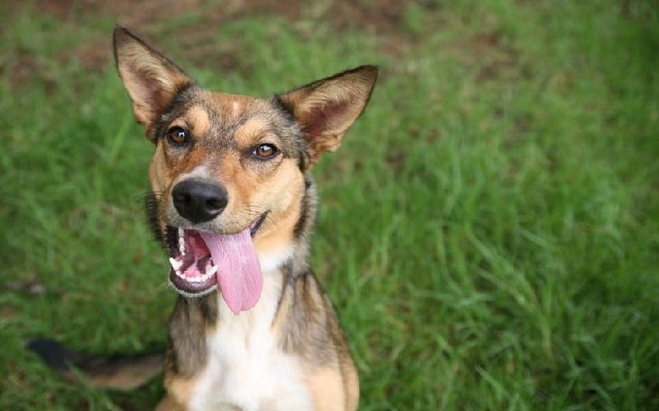

Dog
Name : Soldier
Vaccinated : Yes
Breed : Golden Retriever
The Golden Retriever is the quintessential family dog. This medium-large dog is happy, loyal, affectionate, and active.
Goldens are smart and adaptable dogs that can thrive in most households. The breed does need regular brushing to keep its coat free of tangles and mats.
Goldens also need a good amount of exercise to keep them in good physical condition and prevent boredom.
Training is essential but not difficult.
ADOPT ME |
Dog
Name : Thunder and Flash
Vaccinated : Yes
Breed : Carpathian Shepherd Dog
A very devoted, well-mannered, courageous dog,
it was originally used to protect flocks of sheep or its master from any potential
harm during herding (bears, wolves, thieves, etc...).
ADOPT ME |
Dog
Name : Lesley
Vaccinated : Yes
Breed : Mongrel dog
All things about Mongrel is unpredictable from appearance,
behavioral traits, size, health problems and so on.
Some can be small and some can grow big which you will not know when your Mongrel is still in its puppyhood.
You will not know if it will need a big area or just an apartment will be fine. but they are so frendly and playful.

ADOPT ME |
Dog and Cat
Name : Rex and T-Rex
Vaccinated : Yes
Breed : Chihuahua and mongrel cat
The chihuahua is the world’s smallest dog breed. With a spunky personality,
and a penchant for showmanship, it’s no wonder that these little dogs are so beloved around the world.
What they lack in size, they make up for in personality. And the cat is playful and Rex is his best friend.
ADOPT ME |
Dog
Name : Kido
Vaccinated : Yes
Breed : Finnish Spitz
The Finnish Spitz, or Finkie, is an active, playful yet sensitive breed.
They are very good with children, but if the play becomes too much, they will just walk away.
hey are usually fine with other pets and dogs within the home, but males can be aggressive towards strange dogs.
They are aloof and suspicious of strangers, but early socialisation can over come this.
They are alert and will always let you know when someone is at the door.
ADOPT ME |
Dog
Name : Dodger
Vaccinated : Yes
Breed : Mixed-breed Boxer
Boxers love to be by their companion’s side.
They are smart, high-energy, and playful pals, perfect to be around with and feel protected.
Despite their fun nature, they are extremely loyal and are determined to keep their loved ones safe.
ADOPT ME |
Dog
Name : Max
Vaccinated : Yes
Breed : Basenji
The Basenji is an alert, inquisitive dog, who can be wary of strangers.
It is much more likely to bound with one owner, but are classed as a family dog.
They love attention and are playful, but those with small children should take care as the Basenji can nip if they feel threatened.
Their high prey drive should be watched as they will escape most back gardens and are known for their climbing ability.
If they want to get out they will and are fast runners.
ADOPT ME |
Dog
Name : Sam
Vaccinated : Yes
Breed : Anatolian Shepherd Dog
This breed is known for it's devotion to it's family and ability to protect.
They are happiest with human company, but will try and become pack leader.
Not best suited living in a small house due to their size, but they get on well with other pets/cats if introduced at an early age.
They are good with children and very easy going, but not very playful. They are protective of their families and can be territorial.
ADOPT ME |
Dog
Name : Hera
Vaccinated : Yes
Breed : Alaskan Malamute
Malamutes are strong, independent dogs that need firm training from an early age.
They learn quickly, but have a strong will. Their sheer size can be a problem in an untrained dog,
knocking over furniture and small children when excited. They are a powerful, fun loving breed, that loves people,
but need exercise to lower their high energy level. They love to run and roam, but recall can be a problem;
not because they don't understand, but because they don't want to come back.
ADOPT ME |
Dog
Name : Kara
Vaccinated : Yes
Breed : Springer Spaniel (English)
Springers are devoted, active, friendly dogs.
They love exploring and thrill at rootling around undergrowth, letting their noses guide them.
They are often used as Customs dogs, with an acute sense of smell and willing to please attitude;
they make great working dogs. They are quick to learn, but do need training to calm down their hyperactive nature.
Given plenty of exercise, Springers are perfect family pets. They are good with children and are rarely aggressive.
Affectionate to the extreme, they will want to be with you all the time;
Springers do not do well if left alone for long periods and can become destructive if they get bored.
Springers do well in obedience, retrieving and agility and this helps expel their very active nature.
They love to swim and will find the muddiest puddle possible.
ADOPT ME |
Cat
Name : Rocco
Vaccinated : Yes
Breed : Bengal
The Bengal cat is a very energetic, playful, and intelligent breed.
This breed is generally not recommended for first time cat owners as they can be a handful.
Bengals are very vocal cats and will chirp, and trill at their owners as if they are talking to you.
Bengals love having their owners attention and will want to play regularly.
This breed has even been known to enjoy playing fetch and playing in water!
Because of their wild genetics Bengal cats need lots of mental stimulation and exercise to remain happy.
ADOPT ME |
Cat
Name : Bella
Vaccinated : Yes
Breed : British Shorthair - Bicolour
The British Shorthair cat is a friendly and docile breed.
They love their owners company and will spend as much time in a warm lap as the lap owner allows them to.
They will always welcome you home and fuss for some attention.
They get on fine with other animals and small children but dislike being left alone for long periods.
ADOPT ME |
Cat
Name : Tiger
Vaccinated : Yes
Breed : Highlander
Highlanders may be bred for a big cat look but they are big softies really.
They love to play and chase, and they thrive on human company.
Highlanders are the type of cat that will be there to greet you at the door and won’t hesitate to introduce
themselves to visitors.
ADOPT ME |
Cat
Name : Tommy and Shelby
Vaccinated : Yes
Breed : Burmese
Burmese cats are very friendly, sweet natured cats who thrive off attention.
This cat is known for being vocal much like their Siamese cousins, however their voice is softer.
Burmese cats can be attention seeking and will become lonely if left by themselves for too long.
This is a great pet for a family as they get along brilliantly with children and are very tolerant.
These cats are full of character and life with them will never be dull.
ADOPT ME |
Cat
Name : Simba
Vaccinated : Yes
Breed : Somali
Somali cats are very intelligent athletic cats.
This breed thrives off interactions with its owner and will love to play with moving toys.
Somali’s just like Abyssinians love to be up high clambering around on top of your cupboard and doors or climbing trees.
These cats are very social but tend to prefer human company to other cats or animals.
These fun loving cats make a great family pet as they love the attention they can get from children.
ADOPT ME |
Cat
Name : Maya
Vaccinated : Yes
Breed : Selkirk Rex
The Selkirk Rex has a wonderful temperament that reflects many of the breeds that were used in its development.
This breed has inherited the laidback personality of the British Shorthair.
They are very patient and calm which is a useful quality as many people can’t help but scoop this cat up
to feel the wonderful coat. The exotic shorthair has given this breed a playfulness making them a great cat for children.
The Persian in the breed accounts for the affection that Selkirk Rex can give to its owners.
ADOPT ME |